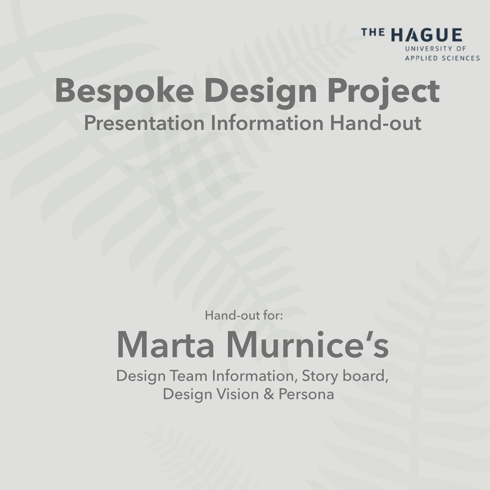
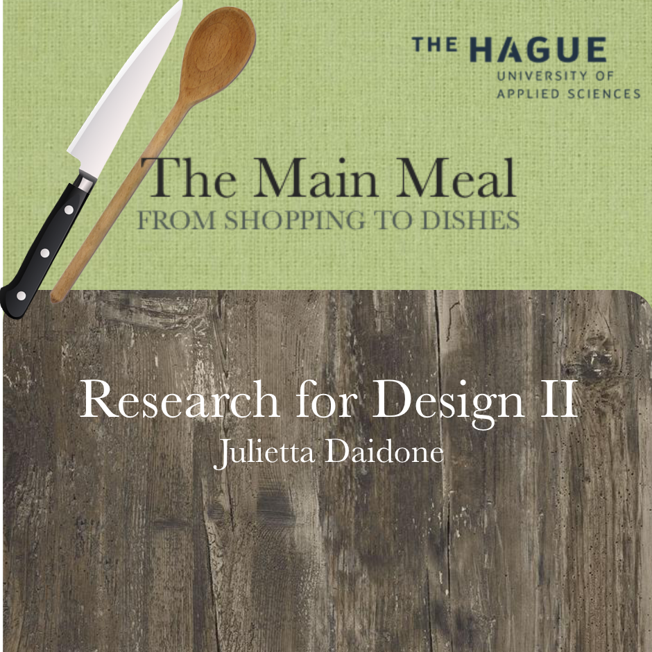
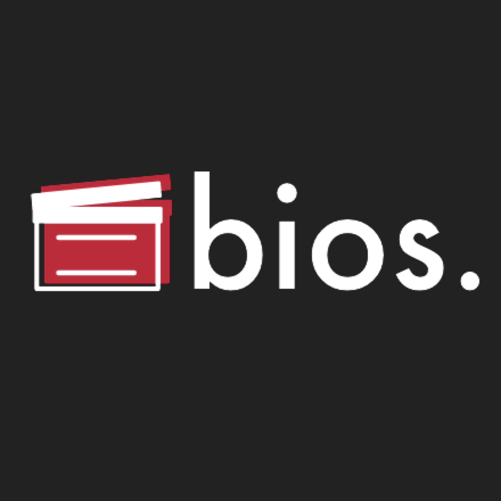
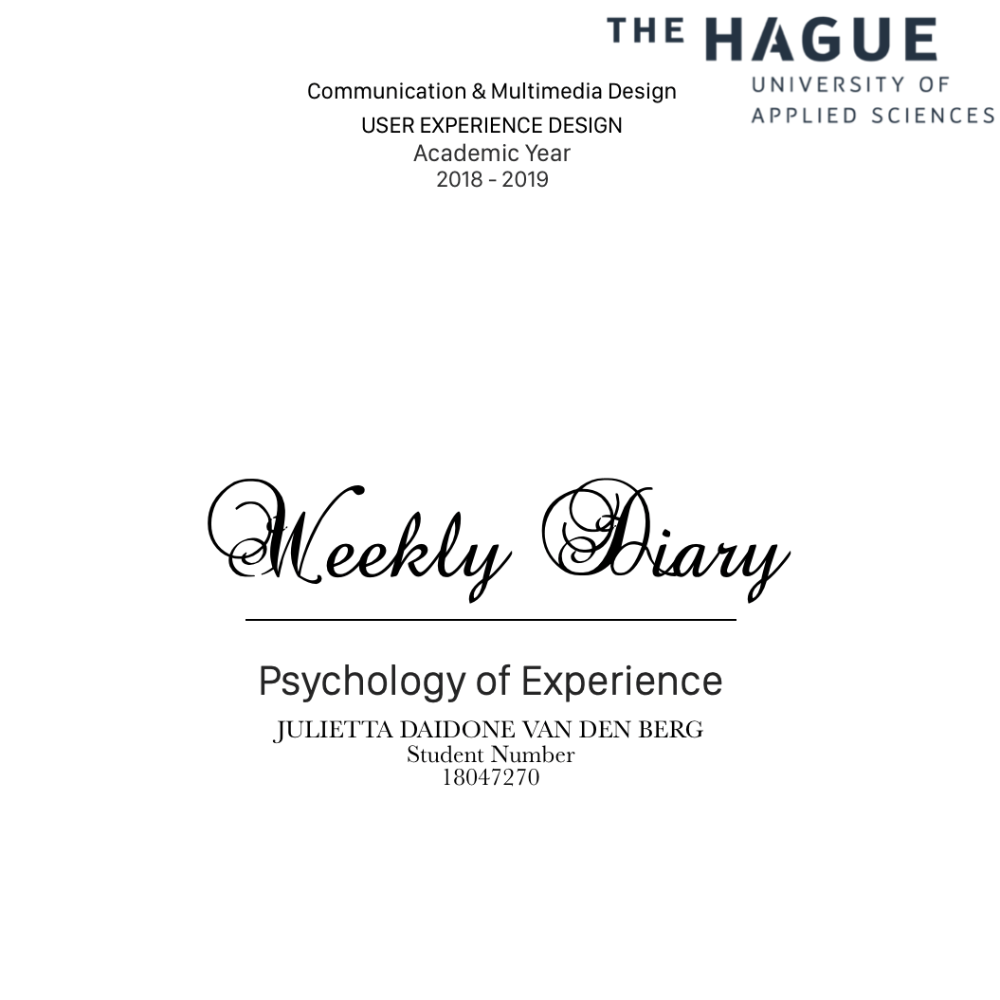

Project List
Bespoke Design
Gift Giving Experience
Due: 23rd January
This is a design thinking journal. We did this journal in class (and outside of class) because it gives me, as a designer, an opportunity to show my iterations, reflections on my design process, and it'sa way to justify my design decisions.
In this journal, I wrote weekly entries. After each weekly assignment, there were guidelines for writing the entry (weekly review) for that week, in these entries I mostly wrote about my experience with the whole project.
Read more...Research for Design
The Main Meal
Due: 21st January
This research portfolio is centered around the main meal from shopping to dishes, in this journal I keep track of all my research activities and findings throughout the course. In the Research for Design II course we learn to refine and expand our observation and interviewing skills, we then combine these in order to make so-called ethnographic descriptions of a group of people.
The research I am conducting will revolve around using existing knowledge about human, society and technology in order to better understand the results of my observations and research.
Read more...Interaction Design
dutch cinema experience
Due: 25th January
This project’s objective is for us students to apply techniques throughout the Stanford d.school design process to create user centered platforms and interfaces. In this journal these techniques will guided us through the project and allowed us to think of requirements needed in order to design a user friendly environment which objective is to fulfill the user’s needs.
Read more...Psychology of Experience
Weekly Diary
Due: 18th January
The objective if this personal blog is to reflect on how to create a good user experience and user interface. It is important to have knowledge of the human mind and how it works in order to make a UI that is pleasant to use.
Every week it includes guidelines related to the chapter reviewed that week. In the course we learn about user interface which we make guidelines for every week.
Read more...Current University
The Hague University of Applied Sciences | The Hague, NL
User Experience Design (CMD) Degree, 2018-2021
3 year full-time English program.